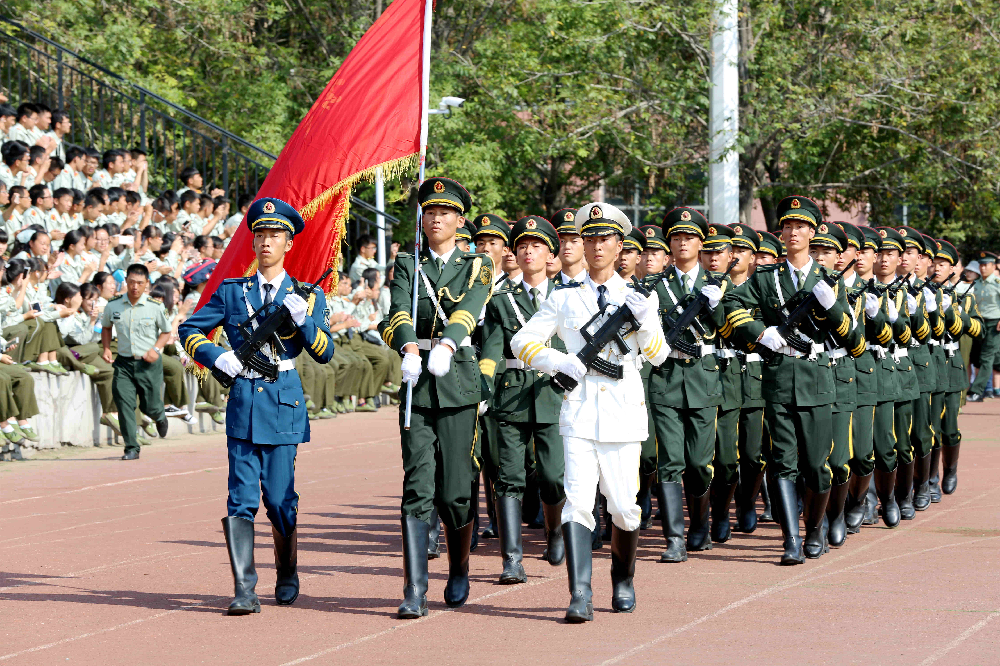
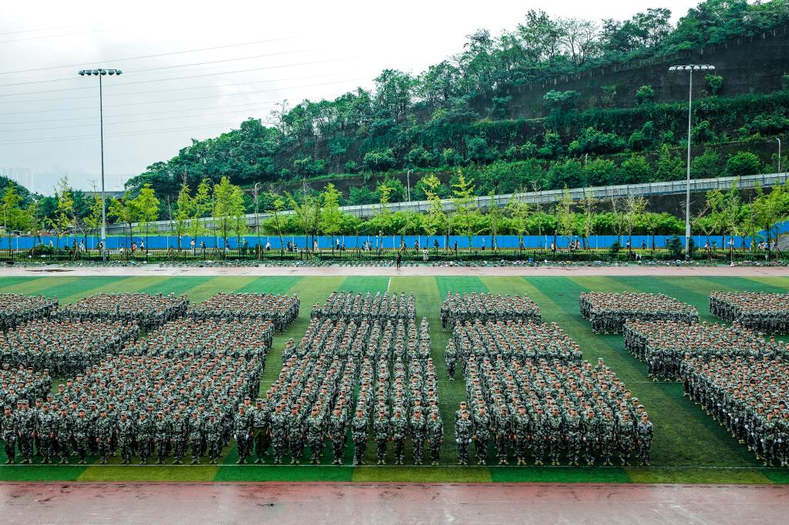
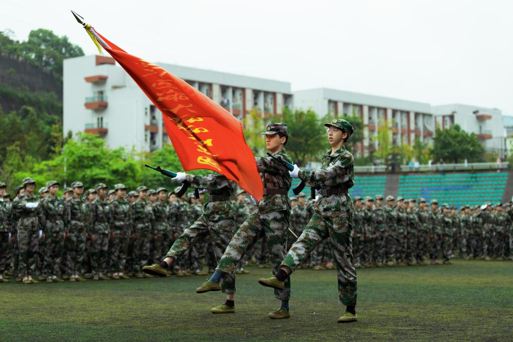
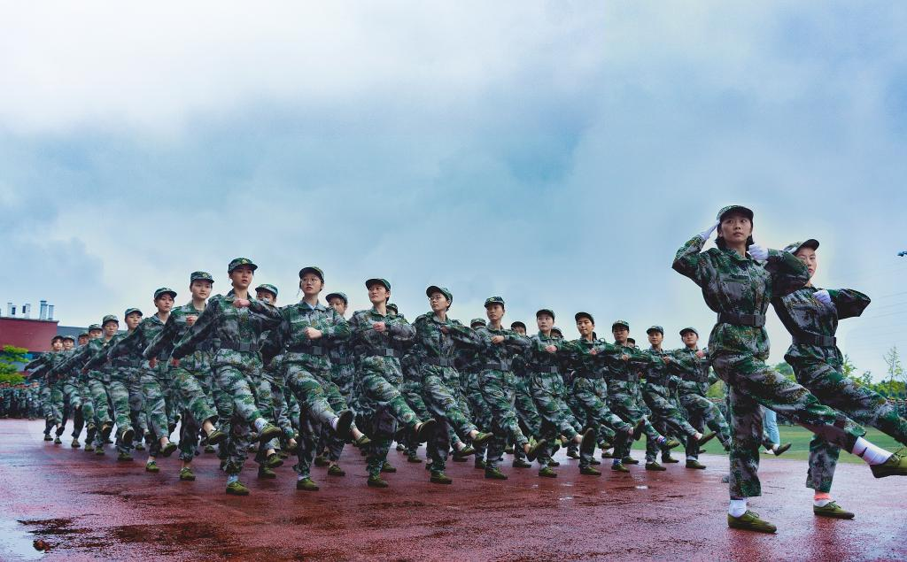

新生军训汇报表演
发布时间：2018-10-30 作者：欧阳霸道
3月19日，全省2015年度基础教育工作会议在蓉召开。会议回顾总结2014年全省基础教育重点工作完成情况，研究分析当前教育改革发展的形势，部署2015年基础教育改革发展的主要任务。省教育纪工委书记、省纪委驻教育厅纪检组长狄志军，省教育厅副厅长何浩分别就相关工作进行了部署。省人民政府教育督导团总督学刘东主持会议。
会议指出，2015年是全面深化改革的关键之年、全面推进依法治国的开局之年，也是全面完成“十二五”教育规划的收官之年，做好今年教育工作意义特别重大。今年工作的总体思路是：认真学习贯彻党的十八大、十八届三中、四中全会精神，深入贯彻习近平总书记系列重要讲话精神，按照“四个全面”的战略部署，全面贯彻党的教育方针，全面实施素质教育，紧紧围绕促进公平和提高质量这两大中心任务，全面深化改革，突出依法治教，不断提高基础教育现代化水平，促进广大中小学生健康成长和全面发展。
 仪仗队一 刘能 摄总结回顾了2014年全省基础教育重点工作完成情况后，何浩分析了当前基础教育改革发展面临的新形势。他指出，习近平总书记对“四个全面”的战略部署和“新常态”的重大判断要深入学习，正确把握。要以此为参照，正确分析和定位当前基础教育的形势，找准结合点、把住着力点，引领和推动事业科学发展。要在“四个全面”的总体布局中定位基础教育；充分认识经济新常态对提高基础教育质量的新机遇；充分认识经济新常态对促进基础教育公平的新要求；充分认识经济新常态对深化基础教育改革的新任务；充分认识经济新常态对推进基础教育治理的新挑战。
何浩就全省基础教育5个方面的重点工作进行了安排：一是抓法治，完善基础教育治理体系。要加快现代学校制度建设，加强和改进中小学法治教育，规范中小学办学行为，高度重视学校党建工作。二是抓育人，深入推进素质教育。要加强社会主义核心价值观教育，紧紧抓住学校体育和艺术两大抓手，构建中小学教育质量综合评价体系。三是抓公平，按期完成均衡发展目标任务。完成今年45个县（市、区）接受均衡发展督导评估的任务，优化教育资源配置，加强义务教育均衡监测，推动义务教育招生考试改革，要做好特殊群体教育工作。四是抓关键，切实改善基础教育薄弱环节。要实施好第二轮学前教育三年行动计划，推进普通高中教育改革发展，加快发展民族地区教育。高度重视推进特殊教育发展，实施好我省《特殊教育提升计划(2014—2016年)》，继续提高特殊教育学校生均公用经费水平，改善办学条件。五是抓应用，不断提升教育信息化水平。
 队列方阵 刘能 摄  仪仗队特写 刘能 摄  女生方队 刘能 摄 刺刀阵 刘能 摄